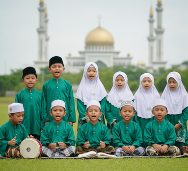
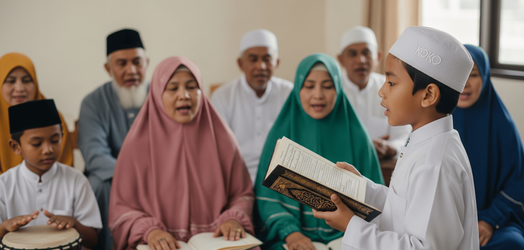

Sejarah Tamyiz
ABAZA (Pencipta Metode Tamyiz)
Metode Tamyiz merupakan sebuah pendekatan inovatif dalam mempelajari dan
menerjemahkan Al-Qur’an secara per kata, yang dirancang agar dapat
dipahami dengan mudah dan menyenangkan oleh berbagai kalangan.
Keistimewaan metode ini terletak pada kesederhanaan teknik yang
digunakan, sehingga dapat diikuti oleh siapa pun—baik anak-anak, remaja,
dewasa, hingga orang tua—dengan satu syarat utama: sudah mampu membaca
Al-Qur’an. Metode ini dikatakan mudah, karena tidak membutuhkan latar
belakang bahasa Arab secara mendalam. Setiap peserta diajak untuk
memahami makna kata demi kata dari ayat-ayat Al-Qur’an secara bertahap
dan sistematis, sehingga memudahkan dalam menyerap makna kandungannya
secara langsung. Sementara itu, metode ini juga menyenangkan, karena
materi disampaikan melalui lagu-lagu anak-anak yang familiar dan
bernuansa ceria. Pendekatan musikal ini terbukti efektif dalam membantu
daya ingat, karena merangsang kerja otak kanan, yang dikenal lebih kuat
dalam menyimpan informasi secara visual dan auditif. Dengan demikian,
proses pembelajaran menjadi lebih hidup, interaktif, dan membekas dalam
ingatan. Dengan Metode Tamyiz, belajar menerjemahkan Al-Qur’an tidak
lagi menjadi hal yang sulit atau membebani, tetapi justru menjadi
pengalaman spiritual yang menggembirakan dan penuh makna. Harapannya,
metode ini dapat menjadi jembatan bagi umat Islam dalam memahami kalam
Allah secara lebih mendalam, sekaligus menumbuhkan kecintaan terhadap
Al-Qur’an dalam keseharian.
Bermula dari kenyataan di masyarakat, banyak umat Islam yang dapat
membaca Al-Qur'an, namun tidak memahami isinya. Padahal, Al-Qur'an
diciptakan untuk menjadi petunjuk bagi setiap manusia. Hal ini
menimbulkan keprihatinan dalam diri Abaza Tamyiz, pimpinan Pondok
Pesantren Bayt Tamyiz, Indramayu. "Kalau saya ibaratkan orang yang bisa
membaca Al-Qur'an, tapi tidak tahu artinya itu, seperti orang buta warna
melihat lampu bangjo (lampu lalu lintas). Kalau orang tidak bisa
membedakan warnanya, jalanan pasti jadi crowded sekali," kata Abaza.
Nama Tamyiz itu sendiri diambil dari nama gurunya, yaitu Anas Tamyiz.
Dari gurunya ini, Abaza mendapatkan inspirasi tentang urutan
pembelajaran nahwu sharaf dari huruf hingga kalimat. Ide itu juga muncul
dari hasil diskusi Abaza dengan atasannya, MS Kaban. Suatu hari, MS
Kaban melakukan dinas ke negara Mesir. Di negara tersebut, dia berziarah
ke Makam Imam Syafi’i. Di sana dia mendengar cerita bahwa Imam Syafi’i
adalah imam yang berhasil menghafal Alquran 30 juz pada usianya 10
tahun. Rasa kagumnya terhadap Imam Syafi’i membuat MS Kaban mengajak
Abaza berdiskusi tentang bagaimana cara mengajar anak-anak Indonesia
agar menjadi seperti imam mazhab tersebut sepulangnya dari Mesir. Dari
kedua orang ini, dia kemudian terinspirasi untuk melakukan penelitian
dan menciptakan metode Tamyiz. Abaza mengatakan, dalam pembelajaran
bahasa Indonesia, orang Indonesia terbiasa dengan konsep pembelajaran
bahasa bahwa kalimat terdiri atas susunan kata. Kata terdiri atas
susunan suku kata dan suku kata terdiri atas susunan huruf. Dalam kitab
nahwu dan sharaf, pembelajaran dilakukan dari level kalimat.
Pembelajaran dengan cara ini, menurut Abaza, akan mudah dikuasai oleh
orang yang terbiasa menggunakan bahasa Arab dalam keseharian mereka.
Namun, bagi masyarakat Indonesia yang cenderung bertemu dengan bahasa
Arab ketika membaca Alquran, ini akan terasa sangat sulit. Menurut
Abaza, hal itu akan membuat ilmu nahwu dan sharaf terasa sulit bagi para
pembelajar di Indonesia. Karenanya, Abaza kemudian terpikir untuk
membuat metode pembelajaran ilmu nahwu dan sharaf baru yang dimulai dari
tingkat huruf, suku kata, kata, kemudian kalimat. Metode inilah yang
kemudian dikenal dengan metode Tamyiz. Anak pertama dan kedua Abaza tak
luput merasakan uji coba metode tersebut. Dia menceritakan, anak
pertamanya telah dapat menerjemah Alquran ketika berusia delapan tahun,
sedangkan anak kedua enam tahun.
Suatu hari, datang seorang sarjana ilmu Alquran ke rumahnya. Orang ini
hafal Alquran, namun tidak mengetahui artinya. Abaza pun meminta anaknya
yang masih berusia enam tahun ini untuk mengajarinya. "Jadi, dengan
metode ini anak-anak yang masih kecil sudah bisa menerjemah dan bisa
mengajarkannya kepada orang lain," katanya. Dia menceritakan, saat ini
metode Tamyiz telah menjadi muatan lokal di SD hingga SMA se-Indramayu.
Ia berharap beberapa tahun ke depan, anak-anak ini akan menjadi generasi
baru anak Indonesia yang dapat membaca serta memahami isi Al-Qur'an
sehingga Alquran kembali pada fungsi awalnya sebagai panduan hidup
manusia. Menurutnya, reaksi masyarakat terhadap metode ini cukup
memuaskan. Banyak orang kemudian datang untuk belajar metode Tamyiz.
Abaza lantas terpikir untuk membuat sebuah lembaga. Dibangunlah Pondok
Pesantren Bayt Tamyiz di Indramayu untuk memfasilitasi orang-orang yang
ingin belajar metode tersebut. Di pondok pesantren ini, diselenggarakan
program pembelajaran metode Tamyiz selama sebulan. Pada dua pekan
pertama, santri akan belajar tentang metode Tamyiz hingga dapat
menerjemahkan Al-Qur'an dan kitab kuning. Pada pekan ketiga, santri
diharapkan sudah dapat mengajarkan metode tersebut.
Metode Terjemah

Metode tamyiz adalah berbeda dengan metode pengajaran Al-Qur’an lainnya.
Dijelaskan, metode tamyiz adalah bisa diajarkan secara langsung kepada
siapapun yang sudah bisa membaca Al-Qur’an. Baik untuk orang tua,
remaja, hingga anak-anak tanpa dibedakan kelas dan waktu pengajarannya.
Pendekatan struktur satuan bahasa dalam metode tamyiz adalah dimulai
dari yang kecil. Mulai dari abjad, kalimah atau lafadz, sampai jumlah
atau kalam. Tamyiz adalah metode yang mampu membuat santri dan siapapun
yang bisa membaca Al-Qur’an ahli membaca, menguraikan struktur kata,
menerjemahkan Al-Qur’an, dan kitab kuning dalam waktu kurang dari 100
jam belajar. Motto dari metode tamyiz adalah “Pintar Terjemah Al-Qur’an
dan Kitab Kuning 100 Jam.” Bagaimana cara mengajar metode tamyiz? Masih
melansir sumber jurnal yang sama, cara mengajar metode tamyiz adalah
mirip dengan buku Nahwu Shorof lainnya. Ada dua prinsip cara mengajar
metode tamyiz yang harus dipegang. Pertama, mengajar dengan bahasa hati
(mengajar bisa dengan mulut, bisa dengan hati dan Allah menurunkan
Al-Qur’an ke hati manusia). Kedua, mengajar dengan mematuhi tahapan.
Lalu bagaimana prinsip belajar metode tamyiz?
1. LADUNI (Ilate Kudu Muni)
Metode Laduni merupakan sebuah pendekatan unik dalam pembelajaran dan
penghafalan Al-Qur’an yang menitikberatkan pada kekuatan suara. Kata
Laduni merupakan singkatan dari ungkapan dalam bahasa Jawa, “Ilate Kudu
Muni”, yang berarti “lidah harus berbunyi” atau “ucapan harus terdengar
lantang.” Filosofi inilah yang menjadi dasar utama dalam metode ini.
Berbeda dengan pendekatan yang bersifat pasif atau hanya mengandalkan
pembacaan dalam hati, Metode Laduni menuntun peserta untuk melafalkan
ayat-ayat Al-Qur’an dengan suara yang jelas, kuat, dan penuh semangat.
Dengan melibatkan aspek vokal secara aktif, metode ini secara ilmiah
turut mengoptimalkan fungsi otak kanan, yang berperan dalam daya ingat,
emosi, dan kreativitas. Suara lantang tidak hanya memperkuat hafalan
secara akustik, tetapi juga menciptakan keterlibatan emosional dalam
proses belajar.
Dengan demikian, ayat-ayat yang dibaca akan lebih melekat dalam ingatan,
sekaligus memberikan pengalaman spiritual yang lebih dalam. Selain itu,
pengucapan yang jelas juga membantu dalam pelatihan makharijul huruf dan
tajwid secara alamiah. Metode Laduni sangat cocok digunakan oleh peserta
didik dari berbagai usia—baik anak-anak, remaja, maupun dewasa—karena
pendekatannya yang dinamis dan membangkitkan semangat. Tidak hanya
menghafal, peserta juga dilatih untuk memahami dan meresapi bacaan
Al-Qur’an secara utuh melalui kekuatan lisan. Dengan Metode Laduni,
proses menghafal Al-Qur’an bukan sekadar aktivitas mental, tetapi
menjadi sebuah gerakan jiwa dan raga yang bersinergi. Inilah metode yang
menghidupkan bacaan, menguatkan hafalan, dan menghubungkan hati dengan
Kalam Ilahi secara lebih mendalam.
2. SENTOT (Santri TOT)
Metode Tamyiz merupakan sebuah pendekatan inovatif dalam mempelajari dan
menerjemahkan Al-Qur’an secara per kata, yang dirancang agar dapat
dipahami dengan mudah dan menyenangkan oleh berbagai kalangan.
Keistimewaan metode ini terletak pada kesederhanaan teknik yang
digunakan, sehingga dapat diikuti oleh siapa pun—baik anak-anak, remaja,
dewasa, hingga orang tua—dengan satu syarat utama: sudah mampu membaca
Al-Qur’an. Metode ini dikatakan mudah, karena tidak membutuhkan latar
belakang bahasa Arab secara mendalam. Setiap peserta diajak untuk
memahami makna kata demi kata dari ayat-ayat Al-Qur’an secara bertahap
dan sistematis, sehingga memudahkan dalam menyerap makna kandungannya
secara langsung.
Sementara itu, metode ini juga menyenangkan, karena materi disampaikan
melalui lagu-lagu anak-anak yang ceria dan penuh semangat. Pendekatan
musikal ini terbukti efektif dalam membantu daya ingat, karena
merangsang kerja otak kanan, yang berperan dalam penyimpanan memori
jangka panjang. Dengan cara ini, proses belajar menjadi lebih hidup,
interaktif, dan membekas dalam ingatan. Tidak hanya berhenti pada
pemahaman dan hafalan pribadi, Metode Tamyiz juga memiliki kelanjutan
yang visioner, yaitu program SENTOT – singkatan dari Santri Trainer of
Trainer. SENTOT merupakan filosofi penting yang menyiratkan bahwa siapa
saja yang belajar metode Tamyiz, insya Allah akan mampu mengajarkannya
kembali kepada orang lain. Dengan semangat berbagi ilmu, para peserta
tidak hanya menjadi pembelajar, tetapi juga dipersiapkan untuk menjadi
pendakwah yang membawa manfaat lebih luas bagi umat. Dengan adanya
SENTOT, proses belajar tidak hanya bersifat individual, tetapi
berkembang menjadi gerakan pendidikan yang berkelanjutan. Setiap santri
Tamyiz diharapkan mampu menjadi penggerak dakwah Al-Qur’an di
lingkungannya, baik di rumah, sekolah, masjid, maupun komunitas lainnya.
Melalui Metode Tamyiz dan program SENTOT, kita membangun generasi
Qur’ani yang tidak hanya mampu memahami isi Al-Qur’an, tetapi juga
berkontribusi dalam menyebarkannya dengan cinta dan semangat.
Semua Bisa Belajar Tamyiz

Dalam semangat dakwah dan pendidikan Al-Qur’an, program TOT (Trainer of
Trainer) Metode Tamyiz hadir sebagai sarana pembinaan dan pemberdayaan
umat untuk menjadi pengajar Al-Qur’an yang memahami maknanya, bukan
hanya sekadar membacanya. TOT Tamyiz tidak hanya berfokus pada
penguasaan metode, tetapi juga menanamkan keyakinan bahwa setiap orang
memiliki potensi yang sama untuk memahami terjemah Al-Qur’an secara
mendalam, tanpa memandang latar belakangnya. Salah satu keunggulan utama
dari metode Tamyiz adalah kesetaraannya dalam hasil belajar. Berdasarkan
pengalaman dan pelatihan yang telah dilakukan, peserta dari berbagai
jenjang pendidikan dan usia—anak-anak SD, pelajar SMP dan SMA,
mahasiswa, guru, bahkan orang tua dan pensiunan—menunjukkan tingkat
pemahaman dan kemampuan yang relatif setara dalam menerjemahkan
Al-Qur’an per kata setelah mengikuti pelatihan ini. Baik mereka yang
pernah mondok (mesantren) maupun yang belum, lulusan umum maupun
pesantren, hasil akhirnya tetap membanggakan. Bahkan, banyak peserta
yang sebelumnya merasa kesulitan memahami bahasa Arab, kini mampu
menerjemahkan ayat-ayat Al-Qur’an dengan lancar, sistematis, dan penuh
percaya diri. Hal ini membuktikan bahwa Metode Tamyiz mampu
menyederhanakan ilmu yang kompleks menjadi mudah dipelajari oleh siapa
saja, asalkan memiliki satu syarat utama: sudah bisa membaca Al-Qur’an.
Program TOT Tamyiz juga menegaskan bahwa setiap pembelajar berpotensi
menjadi pengajar. Tidak sedikit peserta pelatihan yang awalnya hanya
berniat belajar untuk diri sendiri, justru kemudian menjadi penggerak di
sekolah, masjid, atau komunitasnya. TOT membuka ruang luas bagi siapa
saja untuk menjadi pelatih, pendakwah, dan penyebar cahaya Al-Qur’an,
tanpa merasa terbatas oleh gelar, usia, atau pengalaman. Dengan prinsip
dari santri untuk umat, TOT Tamyiz mengajak kita semua untuk tidak hanya
memahami isi Al-Qur’an, tetapi juga menyebarkannya kepada orang lain,
dengan keyakinan bahwa setiap orang bisa, dan insya Allah hasilnya akan
luar biasa.